Comunicação
As camadas de abstração mais básicas do desenvolvimento de SD estão na rede de computadores, que servem de substrato a todo e qualquer sistema distribuído, afinal, a pedra fundamental da construção de sistemas distribuídos é a capacidade de comunicação entre seus componentes.
Canais e Protocolos
Para que os componentes de um sistema distribuído se comuniquem, é necessário que seus hosts possuam interfaces de rede e que estas interfaces estejam ligadas a uma rede com capacidade de roteamento de dados, estabelecendo um canal de comunicação entre os componentes. Além do canal, é também necessário que se estabeleça um protocolo de comunicação, que define as regras para que a comunicação aconteça, por exemplo, a gramática para formação de mensagens. Por exemplo, quando você fala com uma pessoa, cara-a-cara, o meio de comunicação é o ar e o protocolo utilizado é a linguagem conhecida pelas duas partes, o Português por exemplo. Na prática, canais de comunicação podem ter diversas topologias e características, por exemplo:
| Ponto-a-ponto | Barramento Compartilhado | Token Ring |
|---|---|---|
| Sem colisões | Com colisões | Sem colisões |
| Roteamento trivial | Roteamento complexo | Roteamento simples |
| Caro (exponencial) | Barato (linear) | Barato (linear) |
Nas redes atuais, pode se dizer que o meio mais utilizado é provido pela arquitetura Ethernet, que trata da comunicação entre nós usando um barramento compartilhado, mesmo que este esteja por vezes escondido. Sobre este meio, são usados protocolos para, por exemplo,
- Controle de acesso ao meio
- Transmissão de mensagens
- Evitar e tratar colisões
As redes Ethernet, contudo, cobrem pequenas áreas e para se ter conversas mais "abrangentes", é necessário que se conecte diversas destas redes. A conversa então é feita por meio de intermediários, gateways que conectam duas ou mais redes, permitindo que mensagens de um interlocutor sejam roteadas para o outro, via tais intermediários.
Um exemplo interessante das questões ligadas à manutenção da conversa entre dois pontos é a decisão sobre o uso de comutação de pacotes (packet switching) ou de circuitos (circuit switching).
| Comutação de pacotes | Comutação de circuito |
|---|---|
| Cada pacote viaja independentemente | Todo pacote viaja por caminho predefinido |
| Latência variável | Latência mais constante |
| Banda não reservada | Banda reservada |
| Banda não desperdiçada | Banda desperdiçada |
Outro fator importante é a unidade máxima de transmissão (maximum transmission unit, MTU), o tamanho máximo de um pacote em determinada rede. É necessário entender que qualquer quantidade de dados maior que o MTU precisará ser dividida em múltiplos pacotes. Também é importante perceber que redes são heterogêneas, e que o vários segmentos no caminho entre origem e destino podem ter MTU diferentes, levando à fragmentação de pacotes em trânsito e, possivelmente, entrega desordenada dos mesmos.
Finalmente, há uma questão importante relativa à confiabilidade na transmissão dos elementos da conversa, isto é, se a rede deve garantir ou não que algo "dito" por um interlocutor deve garantidamente ser "ouvido" pelo outro, ou se a mensagem pode ser perdida no meio.
Felizmente boa parte da complexidade da resolução destas questões é abstraída do desenvolvedor dos sistemas distribuídos, isto é, você, lhe cabendo apenas a decisão de qual protocolo utilizar. Nas redes atuais, a conversa em componentes será feita, em algum nível, por meio dos protocolos da arquitetura Internet.
A Internet
A Internet tem este nome por usar o protocolo de interconexão de redes independentes, o internetworking protocol, ou IP. Para a aplicação usando o IP, todas as redes se comportam como uma única e coerente rede, exceto por alguns detalhes. Os elementos que conectam as diversas redes são denominados roteadores e fazem um melhor esforço para encaminhar os pacotes de dados do remetente ao destinatário.

Se você se lembrar da pilha de protocolos de comunicação de referência OSI, lembrará que há uma organização em camadas em que cada camada é responsável pela comunicação em um nível e serve de fundação para a funcionalidade da camada de cima, isto é, cada camada é responsável pela comunicação em um nível de abstração que serve de base para o nível imediatamente superior: O protocolo de cada camada inclui cabeçalhos (header) e carga (payload) e o conjunto de cabeçalho + carga de uma camada é considerado carga da camada inferior. Assim, embora tenha-se a impressão de que cada camada conversa com a equivalente do outro lado da comunicação, na prática, a comunicação desce e sobe a pilha.

São sete as camadas:
- Física: Bits
- Enlace: Frames/quadros; controle de fluxo; acesso ao meio.
- Rede: Datagramas/pacotes; roteamento
- Transporte: Controle de fluxo; fim a fim; confiabilidade; tcp e udp
- Sessão: Streams/fluxos; conexões lógicas; restart; checkpoint; http, ssl
- Apresentação: Objetos; json, xml; criptografia
- Aplicação: Aplicações; http, pop, ftp
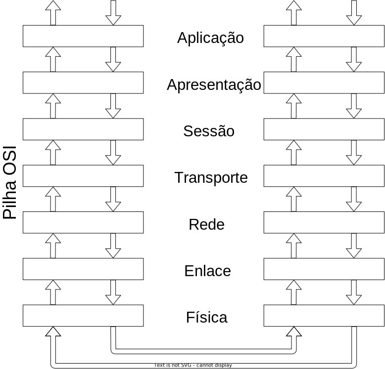
Embora o IP se refira estritamente ao protocolo da camada 3 da pilha, nos referimos à pilha que usa este protocolo como a pilha IP. Comparada à pilha OSI, a IP é mais simples, como se vê na figura, pois as camadas 5 e 6 não estão presentes na pilha IP e as funcionalidades correspondentes são implementadas na camada 7, de aplicaçao.

Contudo, não tema! Estas funcionalidades podem se normalmente implementadas por meio de frameworks ou do middleware em uso. Alguns exemplos de tais funcionalidades são
- (De)Serialização - conversão de estruturas complexas, e.g., objetos e estruturas, em sequência de bytes.
- Nomeamento - identificação de hosts
- Criptografia - ocultação dos dados trafegados
- Replicação - comunicação com múltiplos interlocutores
- Invocação remota de procedimentos - abstração de protocolos de comunicação
A grande vantagem desta abordagem é que se pode implementar exatamente e somente as funcionalidades desejadas. Este característica é conhecida como o argumento fim-a-fim no projeto de sistemas; uma análise recente deste argumento foi feita aqui.
Como usuários da pilha IP, temos que entender como a camada 3 funciona, mas dificilmente interagiremos com algo além da camada 4, a camada de transporte.
Sockets
Na prática, para implementarmos a comunicação entre processos, usamos sockets. Para se definir um socket a partir de um host é necessário identificar o outro fim da comunicação, isto é, o outro host, ou melhor, uma de suas interfaces de rede. Os sockets são então a abstração dos canais de comunicação, mas como dito antes, é necessário definir também os protocolos usados por estes sockets. O primeiro protocolo é o de endereçamento, que define qual pilha de protocolos usar, na camada 3. No caso da pilha IP, usa-se o protocolo AF_INET ou PF_INET. Escolhido o protocolo,
- cada interface tem um endereço MAC, na camada 2, que a identifica entre as interfaces na mesma rede local, e
- cada interface tem um endereço IPv4/IPv6 de 32/128 bits, que o indentifica entre todos os hosts na Internet.2
Mas dentro de um host, podem haver diversas aplicações sendo executadas. Como identificar exatamente com qual se quer conversar? Isto é feito pela definição uma porta:
- Porta: inteiro de 16 bits
- Associadas a serviços pela Internet Assigned Numbers Authority, IANA.
- Portas "Bem conhecidas": 0-1023
- Portas Proprietárias: 49151
- Portas Dinâmicas: 65535
Também é necessário definir o protocolo de transporte dos dados, na camada 4. Novamente, no caso da pilha IP, pode-se usar TCP (SOCK_STREAM) ou UDP (SOCK_DGRAM).
A API usada para estabelecer a conversa via socket tem várias chamadas, que devem ser executadas na ordem certa no processo iniciando a conversa e naquele que aceita participar da mesma. Comecemos estudando o TCP.
TCP
O fluxograma da criação de um socket TCP é apresentado na seguinte figura:
Estabelecido o socket, o mesmo pode ser usado como um arquivo, isto é, lendo-se e escrevendo-se bytes. O que exatamente deve ser escrito e como o que é lido deve ser interpretado é o protocolo da camada 7, sua responsabilidade.
Vejamos um exemplo do uso de sockets, em Python, descrito no arquivo server.py.3
1 2 3 4 5 6 7 8 9 10 11 12 13 14 15 16 | |
Para executá-lo, execute o seguinte comando em um terminal.
1 | |
Em outro terminal, execute um dos dois comandos a seguir. 4
1 | |
1 | |
No segundo terminal a mensagem
Thank you for connecting
será impressa, enquanto no primeiro veremos algo como
('Got connection from', ('127.0.0.1', 57801))
O que está acontecendo aqui é um processo criou um socket e ficou aguardando uma conexão, usando o código em Python. Tanto o telnet quando o netcat são programas genéricos para se conversar com outro processo usando TCP/IP. Aqui, estes programas simplesmente se conectaram e imprimiram o que quer que o primeiro processo lhes tenha enviado, assumindo que correspondia a uma string, o que neste caso é correto. Simples, não é mesmo?
Duas observações importantes a serem feitas aqui. A primeira é que, em geral, denominamos o processo que fica aguardando a conexão de servidor e o processo que se conecta de cliente. Isto por quê, em geral, o servidor executa alguma tarefa, serve, o cliente, embora isto não seja necessariamente verdade.
Por completude, vamos também escrever o código do cliente, agora que você já sabe que o servidor funciona. Do lado cliente, estabelece-se uma conexão apontando-se para onde está o servidor.
1 2 3 4 5 6 7 8 9 10 11 12 13 14 | |
E para se executar o cliente, faça:
1 | |
Observe que o socket.close() encerra a conexão do lado de quem invoca. Na contraparte, invocações a socket.recv() retornam com 0 bytes lidos.
A título de comparação, em Java, a criação do socket do lado do servidor seria muito mais simples, consistindo apenas em:
1 | |
O cliente em Java também é simplificado.
1 | |
Exercício: Múltiplos Pacotes
Façamos agora uma modificação no código do servidor para que envie não uma, mas duas mensagens para o cliente. Isto é, modifique seu servidor assim
1 2 3 4 | |
Agora execute novamente o cliente e veja o que acontece. Consegue explicar o fenômeno?
Modifiquemos o cliente agora, para que tenha dois recv, assim.
1 2 3 4 5 6 7 8 | |
E agora, o que acontece? A saída é como esperava? Como explica este fenômeno e como poderia corrigí-lo?
Exercício: Ping-Pong
Modifique cliente e servidor tal que o cliente envie uma mensagem passada na linha de comando ao servidor e fique esperando uma resposta, e tal que o servidor fique esperando uma mensagem e então solicite ao operador que digite uma resposta e a envie para o cliente. O loop continua até que o usuário digite SAIR, e a conexão seja encerrada.
| Terminal 1 | Terminal 2 |
|---|---|
| python server.py | python client.py |
| Esperando conexão. | conectando-se ao servidor |
| Conectado | Conectado |
| Esperando mensagem | Digite mensagem: lalala |
| Mensagem enviada | |
| Mensagem recebida: lalala | Esperando resposta |
| Digite resposta: lelele | |
| Resposta enviada. | Resposta recebida: lelele |
| Digite mensagem: SAIR | |
| Desconectando. | |
| Conexão encerrada. | |
| Esperando conexão. |
Observe que para ler do teclado em Python 2 você deve usar x = raw_input(), enquanto que em Python 3 seria x = input(). Além disso, em Python 2, você deve remover as invocações para encode e decode.
UDP
No exemplo anterior, usamos o protocolo TCP (o padrão da API). Caso quiséssemos usar UDP, precisaríamos nos atentar a alguns detalhes.
A criação do socket é feita explicitando-se o uso de datagramas: s = socket.socket(socket.AF_INET,socket.SOCK_DGRAM)
Um servidor UDP não executa listen ou accept e, em Python, simplesmente executa data, addr = sock.recvfrom(4096) para receber o datagrama, onde data é o conteúdo recebido e addr o endereço de quem enviou o datagrama.
Neste caso, um mesmo socket é usado para manter comunicação com múltiplos interlocutores. Para enviar uma resposta a um interlocutor em específico, addr é usado: sent = sock.sendto(data, addr), onde sent é a quantidade de bytes enviados.
Além deste detalhe, é importante manter em mente outras características do UDP:
- falta de ordem
- falta de confiabilidade
- menos dados lidos que enviados.
- mais dados lidos que enviados (pode acontecer também no TCP)
Com tantas dificuldades para se usar o UDP, fica a questão: para que serve UDP?
Exercício: Ping-Pong UDP
Modifique o código do exercício Ping-Pong para usar UDP em vez de TCP na comunicação entre nós. Execute múltiplos clientes ao mesmo tempo. Como o seu servidor lida com isso? Modifique-o para mandar um "eco" da mensagem recebida de volta ao remetente.
IP-Multicast
Imagine que você tenha que enviar um stream de vídeo para um amigo mostrando como você está jogando o mais novo jogo da velha no mercado. Qual protocolo de transporte você usaria? TCP, provavelmente, já que garante a entrega ordenada dos pacotes do vídeo. Como você já sabe, o TCP envia confirmações de pacotes recebidos e usa uma janela deslizante para determinar quais pacotes reenviar, o que pode causar interrupções na execução do vídeo. Além do mais, as pessoas provavelmente preferirão perder alguns quadros que perder a sincronia com sua excitante partida. Parece que uma opção melhor seria então usar UDP, correto?
Imagine agora que os mesmos dados devam ser enviados para múltiplos destinatários (você está ficando famoso!) Com múltiplos destinatários, múltiplos controles precisariam ser mantidos no TCP, o que pode se tornar custoso; mais uma razão para usar UDP!

Para terminar, lhe darei uma razão final: IP-Multicast! Multicast, em oposição ao Unicast, é a capacidade de enviar mensagens para um grupo de destinatários, em vez de apenas um.
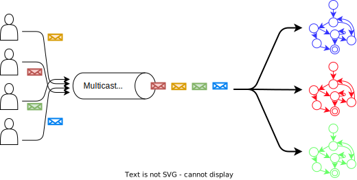
IP-Multicast é uma implementação desta ideia, usando umaa configuração específica do UDP, associada a recursos dos comutadores de rede, para otimizar o envio dos mesmos dados a múltiplos destinatários. Grupos são identificados por endereços IP especiais, conhecidos como Classe D (224.0.0.0-239.255.255.255), e propagados pela rede. A seguinte tabela descreve os usos das sub-faixas de endereços.5
| Endereço | Uso |
|---|---|
| 224.0.0.0-224.0.0.255 | Multicast local - Usado por protocolos L2, como EIGRP e OSPF |
| 224.0.1.0-224.0.1.255 | Multicast roteaddo - Usado por protocolos L3 |
| 232.0.0.0-232.255.255.255 | Source Specific Multicast - Receptores definem fontes confiáveis |
| 233.0.0.0-233.255.255.255 | Reservado para detentores Autonomous Systems |
| 239.0.0.0-239.255.255.255 | Reservado para IANA |
| Resto | Uso geral |
Quando um pacote é enviado para o endereço do grupo, todos os membros do grupo recebem tal mensagem. Melhor dizendo, todos os membros podem receber a mensagem, mas como estamos falando de UDP, é possível que alguns não recebam. Além disso, não há garantia qualquer sobre a ordem de recepção das mensagens.
Apenas reforçando, IP-Multicast só funciona com UDP, pois lidar com retransmissões em um grupo grande levaria a um estado imenso sendo mantido na origem dos dados. Outro ponto importante é que pelo podencial desestabilizador do IP-Multicast, ele é normalemente limitado à pequenas seções das redes.
Mas experimentemos com esta tecnologia na prática. Criemos um programa que criar Socket UDP, associa-o a um grupo, e recebe pacotes destinados ao grupo.
1 2 3 4 5 6 7 8 9 10 11 12 13 14 15 16 17 18 19 20 21 22 | |
Instancie múltiplos processos deste, na mesma máquina e em máquinas distintas. Agora criemos um programa que envia pacotes para o dito grupo.
1 2 3 4 5 6 7 8 9 10 11 12 13 14 15 16 17 18 19 20 21 | |
Observe como a mesma mensagem é recebida pelos vários membros e que como diferentes fontes tem seus pacotes recebidos.
A título de curiosidade, IP-Multicast também está presente em IPv6, mas com algumas pequenas diferenças
IP-Multicast em IPv66
In IPv6, the left-most bits of an address are used to determine its type. For a multicast address, the first 8 bits are all ones, i.e. FF00::/8. Further, bit 113-116 represent the scope of the address, which can be either one of the following 4: Global, Site-local, Link-local, Node-local.
In addition to unicast and multicast, IPv6 also supports anycast, in which a packet can be sent to any member of the group, but need not be sent to all members.''
Exercício: IP-Multicast
Implemente e teste o seguinte receiver, colocando várias instâncias para executar em múltiplos terminais, ao mesmo tempo.
1 2 3 4 5 6 7 8 9 10 11 12 13 14 15 16 | |
Implemente e teste o seguinte sender.
1 2 3 4 5 6 7 8 | |
Além dos Sockets
O desenvolvimento de sistemas distribuídos usando diretamente Sockets como forma de comunicação entre componentes não é para os fracos de coração. Sua grande vantagem está no acesso baixo nível à rede, e todo o ganho de desempenho que isso pode trazer. Suas desvantagens, entretanto, são várias:
- interface de "arquivo" para se ler e escrever bytes;
- controle de fluxo de "objetos" é por conta da aplicação, isto é, a aplicação precisa sinalizar quantos bytes serão escritos de um lado, para que o outro saiba quanto ler para obter um "objeto" correto;
- logo, a serialização e desserialização de objetos é também por conta da aplicação;
- tratamento de desconexões e eventuais reconexões também é gerenciado pela aplicação e nem a tão famosa confiabilidade do TCP ajuda.
Enquanto se poderia argumentar que algumas destas desvantagens podem ser descartadas em função da discussão de incluir ou não API na comunicação fim-a-fim, é certo que algumas funcionalidades são ubíquas em aplicações distribuídas. Foquemo-nos agora na necessidade de representar dados complexos em formato inteligível pelos vários componentes da aplicação distribuída.
Representação de dados
Exceto por aplicações muito simples, processos em um sistema distribuído trocam dados complexos, por exemplo estruturas ou classes com diversos campos, incluindo valores numéricos de diversos tipos, strings e vetores de bytes, com diversos níveis de aninhamento e somando vários KB. Neste cenário, vários fatores precisam ser levados em consideração na hora de colocar esta estrutura no fio, como:
- variações de definições de tipos, por exemplo,
inteiro: 8: 16, 32, ou 64 bits? - variações na representação de dados complexos: classe x estrutura
- conjunto de caracteres diferentes: ASCII x UTF
- little endian, como x64 e IA-32, ou big endian como SPARC (< V9), Motorola e PowerPC? ou ainda, flexível como ARM, MIPS ou IA-64?
- fim de linha com crlf (DOS) x lf (Unix)?
- fragmentação de dados na rede
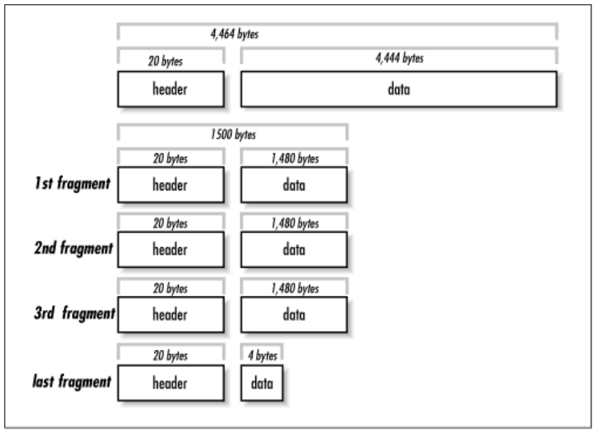
Representação Textual
Uma abordagem comumente usada é a representação em formato textual "amigável a humanos". Veja o exemplo de como o protocolo HTTP requisita e recebe uma página HTML.
1 2 3 4 5 6 7 | |
Em resposta a esta requisição, o servidor envia o seguinte, em que as primeiras linhas trazem metadados da página requisitada e, após a linha em branco, vem a resposta em HTML à requisição.
1 2 3 4 5 6 7 8 9 10 11 12 13 14 15 16 17 18 | |
Representações textuais são usadas em diversos protocolos como SMTP, POP, e telnet. Algumas destas representações seguem padrões formalizados, o que facilita a geração e interpretação dos dados. Dois padrões bem conhecidas são XML e JSON.
XML é o acrônimo para Extensible Markup Language, ou seja, uma linguagem marcação que pode ser estendida para representar diferentes tipos de informação. A HTML, por exemplo, é uma instância de XML destinada à representação de hipertexto (A bem da verdade, XML foi uma generalização de HTML).
Por exemplo, para representarmos os dados relativos à uma pessoa, podemos ter uma instância XML assim:
1 2 3 4 5 6 7 8 9 | |
Uma das grandes vantagens do uso de XML é a possibilidade de se formalizar o que pode ou não estar em um arquivo para um certo domínio utilizando um XML Domain Object Model. Há, por exemplo, modelos para representação de documentos de texto, governos eletrônicos, representação de conhecimento, etc. Sua maior desvantagem é que é muito verborrágico e por vezes complicado de se usar, abrindo alas para o seu mais famoso concorrente, JSON.
JSON é o acrônimo de Javascript Object Notation, isto é, o formato para representação de objetos da linguagem Javascript. Devido à sua simplicidade e versatilidade, entretanto, foi adotado como forma de representação de dados em sistemas desenvolvidos nas mais diferentes linguagens. O mesmo exemplo visto anteriormente, em XML, é representado em JSON assim:
1 2 3 4 5 6 7 8 9 | |
Em Python, por exemplo, JSON são gerados e interpretados nativamente, sem a necessidade de frameworks externos, facilitando seu uso. Mas de fato, a opção final por XML ou JSON é questão de preferência, uma vez que os dois formatos são, de fato, equivalentes na questão da representação de informação.
Outros formatos, binários, oferecem vantagens no uso de espaço para armazenar e transmitir dados, e por isso são frequentemente usados como forma de serialização de dados em sistemas distribuídos, isto é, na transformação de TAD para sequências de bytes que seguirão "no fio".
- ASN.1 (Abstract Syntax Notation), pela ISO
- XDR (eXternal Data Representation)
- Java serialization
- Google Protocol Buffers
- Thrift
ASN.1 e XDR são de interesse histórico, mas não os discutiremos aqui.
Quanto à serialização feita nativamente pelo Java, por meio de ObjectOutputStreams, como neste exemplo, embora seja tentadora para quem usa Java, é necessário saber que ela é restrita à JVM e que usa muito espaço, embora minimize riscos de uma desserialização para uma classe diferente.
Nos foquemos nas outras alternativas listadas, protobuf e Thrift, que podem levar a representações binárias e textuais.
Protocol Buffers
Nas palavras dos criadores,
Protocol buffers are a language-neutral, platform-neutral extensible mechanism for serializing structured data.
Por meio de protobuf, é possível estruturar dados e gerar o código correspondente em diversas linguagens, for forma compartilhável entre as mesmas. Veja o exemplo a seguir, que especifica os dados referentes a uma pessoa. Observe a presença de campos de preenchimento opcional (optional), de enumerações (enum), e de coleções (repeated).
1 2 3 4 5 6 7 8 9 10 11 12 13 14 15 | |
Além dos tipos usados no exemplo, diversos outros tipos primitivos estão disponíveis:
bool: boolean (true/false)double: 64-bit; ponto-flutuantefloat: 32-bit; ponto-flutuantei32: 32-bit; inteiro sinalizadoi64: 64-bit; inteiro sinalizadosiXX: signeduiXX: unsignedsfixedXX: codificação de tamanho fixobytes: 8-bit; inteiro sinalizadostring: string UTF-8 ou ASCII 7-bit
Além destes, também pode ser usado um tipo indefinido e adaptável, Any, bem como coleções.
A especificação protobuf pode ser traduzida para múltiplas linguagens
Por exemplo, se a tradução for feita para C++, o tipo message resulta em uma classe de mesmo nome, com funcionalidades para serialização e desserialização do objeto, como no exemplo a seguir.
1 2 3 4 5 6 7 8 9 10 11 12 13 14 | |
De acordo com benchmarks do próprio projeto, a operação em XML seria mais ordens de grandeza mais lenta e ocuparia mais espaço.
When this message is encoded to the protocol buffer binary format, it would probably be 28 bytes long and take around 100-200 nanoseconds to parse. The XML version is at least 69 bytes if you remove whitespace, and would take around 5,000-10,000 nanoseconds to parse.
Thrift
Originalmente desenvolvido pela Facebook, Apache Thrift é um arcabouço desenvolvimento de serviços multi-linguagens. Isto, mesmo que por enquanto nos foquemos no aspecto da representação de dados desta tecnologia, veremos depois que pode ser usado para executar a troca de dados entre processos.7 Comparado ao protobuf, ele possui praticamente as mesmas funcionalidades, i.e., a definição de estruturas de dados complexos e geração de código para serialização e desserialização de instâncias destas estruturas. O mesmo exemplo acima, que define uma estrutura para representar pessoas e seus contatos, ficaria assim em thrift.
1 2 3 4 5 6 7 8 9 10 11 12 13 14 15 16 17 18 19 20 21 22 | |
Usar a classe correspondente em Java, depois da geração de código pelo compilador thriftc, é bem simples.
1 | |
Observe que além do uso de coleções e enumerações, demonstradas no exemplo, os mesmos tipos básicos também estão disponíveis.
- bool: boolean (true/false)
- byte: 8-bit; inteiro sinalizado
- i16: 16-bit; inteiro sinalizado
- i32: 32-bit; inteiro sinalizado
- i64: 64-bit; inteiro sinalizado
- double: 64-bit; ponto-flutuante
- string: string UTF-8
- binary: sequência de bytes
- coleções: List, Map, Set
Uma vez que tenhamos facilidades para representar dados complexos e transformá-los em sequências de bytes, e de volta, pensemos em como podemos definir, de forma simplificada, serviços que manipulam estes dados. Estas funcionalidades são normalmente implementadas por frameworks de comunicação de mais alto nível que, jargão da área de sistemas distribuídos, são denominados middleware.
Middleware e Transparência
Middleware
- software
- hardware/OS
- aplicação
- diversas funcionalidades
De acordo com Tanenbaum & Van Steen, middleware é
... the software layer that lies between the operating system and applications on each side of a distributed computing system in a network.
Isto é, o middleware é a camada ware que fica no middle, entre, o software e o hardware. Software, no caso, é a aplicação distribuída sendo desenvolvida e hardware é a abstração do host em que se executam os componentes, provida pelo sistema operacional. Uso aqui o termo abstração porquê o sistema operacional pode encapsular hardware real, mas também pode encapsular outra abstração de hardware, por exemplo, uma máquina virtual ou contêiner.
A figura seguinte mostra um exemplo com três aplicações executando sobre um middleware, que por sua vez é executado sobre diferentes sistemas operacionais, em hosts conectados por uma rede de comunicação.

Com este cenário em mente, é importante entender o que diz Sacha Krakowiak quando afirma que as principais funções do middleware são:
- esconder a distribuição e o fato de que um aplicação é geralmente composta por múltiplas partes, executando em localizações geograficamente distintas,
- esconder a heterogeneidade dos vários componentes de hardware, sistemas operacionais e protocolos de comunicação
- prover interfaces uniformes, de alto nível e padronizadas para os desenvolvedores de aplicação e integradores, de forma que aplicações possam ser facilmente compostas, reusadas, portadas e feitas interoperáveis.
Assim, os middleware facilitam a conexão entre componentes e permitem o uso de protocolos mais abstratos que as operações de write(byte[]) e read(): byte[] dos protocolos de baixo nível, escondendo a complexidade da coordenação de sistemas independentes.
Desenvolver sistemas distribuídos sem usar um middleware é como desenvolver um aplicativo sem usar quaisquer bibliotecas: possível, mas complicado, e estará certamente reinventando a roda. Isto é, você praticamente tem que refazer o middleware antes de desenvolver o sistema em si.
Idealmente, com o middleware, o desenvolvedor conseguiria facilmente implementar uma aplicação em que a distribuição fosse totalmente transparente, levando o sistema, uma coleção de sistemas computacionais (software ou hardware) independentes, a se apresentar para o usuário como um sistema único, monolítico. Pense no browser e na WWW, por exemplo: o quanto você sabe sobre as páginas estarem particionadas em milhões de servidores? Isso é o que chamamos de transparência.
Transparência Total
Acesso + Localização + Relocação + Migração + Replicação + Falha
Se não há qualquer indício de que a aplicação é distribuída, então temos transparência total.
Podemos quebrar esta transparência total em várias transparências mais simples: Acesso, Localização, Relocação,
Migração, Replicação, e Falha.
Vejamos cada uma destas separadamente.
Transparência de Acesso
Transparência de Acesso
- como se apresenta
- representação de dados
- arquitetura
- OS
- linguagem
- padrões abertos e bem conhecidos.
A transparência de acesso diz respeito à representação de dados e mecanismos de invocação (arquitetura, formatos, linguagens...). Cada computador tem uma arquitetura e uma forma de representar seus dados. Por exemplo, considere os padrões para representação de números em ponto flutuante IEEE e IBM. Ambos dividem os bits em sinal, expoente e mantissa, mas com tamanhos diferentes.
IEEE9
| Precisão | Tamanho total (bits) | Sinal (bits) | Expoente (bits) | Mantissa (bits) |
|---|---|---|---|---|
| Half | 16 | 1 | 5 | 10 |
| Single | 32 | 1 | 8 | 23 |
| Double | 64 | 1 | 11 | 52 |
| Quadruple | 128 | 1 | 15 | 112 |
IBM10
| Precisão | Tamanho total (bits) | Sinal (bits) | Expoente (bits) | Mantissa (bits) |
|---|---|---|---|---|
| Single | 32 | 1 | 7 | 24 |
| Double | 64 | 1 | 7 | 56 |
| Quadruple | 128 | 1 | 7 | 112 (8b ignorados) |
E se dois componentes de um SD executam em máquinas com arquiteturas diferentes, como trocam números em ponto flutuante? É preciso que usem um padrão conhecido por ambos os hosts, seja o padrão a arquitetura "nativa" do host ou um padrão intermediário, definido pelo middleware.
A mesma questão é válida para representações de strings e classes, e diferenças de sistemas operacionais e linguagens.
No caso específico das strings, pense em um programa escrito em linguagem C e que este programa deva comunicar-se com um outro, escrito em Java, e trocar strings com o mesmo.
Enquanto em C uma string é uma sequência de bytes imprimíveis terminadas por um \0, em Java uma string é uma classe que encapsula uma sequência de chars, sendo que cada char é um código 16 bits representativo de um código Unicode11.
Como transferir strings entre duas plataformas? Não fazê-lo? Simplificar a string Java? Estender a string C?
Para se tentar obter transparência de acesso, é importante que se use padrões implementados em múltiplas arquiteturas, abertos e bem conhecidos, com interfaces bem definidas.
Transparência de Localização
Transparência de localização
- onde está o objeto
- latência
- cache
- paralelismo
- programação assíncrona
- arquiteturas reativas
A transparência de localização diz respeito a onde está o objeto acessado pela aplicação, seja um BD, página Web ou serviço de echo: pouco importa ao usuário, se está dentro da mesma máquina de onde executa o acesso, se na sala ao lado ou em um servidor do outro lado do globo, desde que o serviço seja provido de forma rápida e confiável. A esta transparência é essencial uma boa distribuição do serviço, sobre uma rede com baixa latência, ou o uso de técnicas que permitam esconder a latência.
# Escondendo a Latência
Para se esconder a latência, várias táticas são utilizáveis:
- Caching de dados
- Em vez de sempre buscar os dados no servidor, mantenha cópias locais dos dados que mudam menos (e.g., o CSS do stack overflow).
- Use paralelismo
- Em vez de validar formulário após preenchimento de cada campo, valide em paralelo enquanto usuário preenche o campo seguinte.
- Use callbacks para indicar campos com problemas a serem corrigidos.
- Saiba que nem todo problema é paralelizável, por exemplo, autenticação
- Use programação assíncrona
- AsyncIO
- C# await/async
- Futures e Promises
Outra forma de diminuir latência é trazer para próximo do usuário parte da computação. Isto é comumente feito com a interface com usuário, mas pode ser usado também para outras partes do sistema. Como exemplo do primeiro, pense em consoles de video-game que fazem o processamento gráfico pesado de jogos online na casa do usuário12. Como exemplo do segundo, pense em aplicativos que mantém os dados em celulares até que uma boa conexão, por exemplo WiFi, esteja disponível para sincronizar com o servidor.
De forma geral, pense em esconder latência pelos seguintes passos:
- Distribua tarefas
- Delegue computação aos clientes (e.g., JavaScript e Applets Java)
- Particione dados entre servidores (e.g., Domain Name Service e World Wide Web) para dividir a carga e aumentar a vazão
- Aproxime dados dos clientes
- Mantenha cópias de dados em múltiplos lugares.
- Atualize dados de acordo com necessidade (e.g., cache do navegador, com código do google.com sendo atualizado a cada 4 dias)
Transparência de Relocação
Transparência de relocação
- como se movimenta
- visto por clientes
As vezes componentes do sistema distribuído precisam ser movimentados de uma localização à outra, por exemplo porquê um novo host foi contratado. Se implementadas corretamente, as técnicas que entregam transparência de localização não deixam que o cliente perceba a movimentação, no que chamamos transparência de Relocação.
- Rede de baixa latência
- Distribuição inteligente
- E.g: Serviços de nome
- Múltiplas cópias
- Cópias temporárias
Transparência de Migração
Transparência de migração
- como se movimenta
- visto por si mesmo
Do ponto de vista do próprio serviço, não perceber que se está sendo movimentado é chamado transparência de Migração. Um serviço com esta propriedade, não precisa ser parado e reconfigurado quando a mudança acontece. Uma das formas de se implementar esta propriedade é através da migração provida por máquinas virtuais, usado, por exemplo, para consolidar o uso de servidores em nuvens computacionais. Veja o exemplo do VMotion da VMware.

Na verdade, a movimentação neste cenário, é uma cópia da máquina virtual. Uma vez que a cópia esteja próxima do fim, a imagem original é congelada, a cópia concluída, e há um chaveamento na rede para se direcionar toda comunicação para nova cópia. O máquina original é então descartada.
Transparência de Replicação
Transparência de replicação
- redundância
- visto por clientes
A capacidade de ter cópias de um serviço e de direcionar trabalho de uma para outra é também útil para se obter transparência no caso de falhas. Isto porquê para se manter um serviço funcional a despeito de falhas, é preciso ter múltiplas cópias, prontas para funcionar a qualquer momento.
Dependendo das garantias desejadas na manutenção da consistência entre as cópias, o custo pode variar muito, de forma que para se ter um custo menor, tem-se garantias mais fracas, por exemplo, que as réplicas tem um atraso entre elas de no máximo \(X\) minutos. Este é um dilema parecido com o TCP x UDP, em que mais garantias implicam em maior custo de comunicação.
Algumas aplicações toleram inconsistências e podem viver com menores custos. Um exemplo famoso é o dos "carrinhos de compra" da Amazon.com, que podem fechar pedidos com conteúdo diferente do desejado pelo cliente.
Outras aplicações são normalmente construídas com requisitos de consistência forte entre as réplicas, como sistemas financeiros. Para estas aplicações, uma técnica importante para se conseguir replicação é o uso de frameworks de comunicação em grupo, que entregam para múltiplas instâncias de um mesmo serviço, as mesmas mensagens, permitindo que elas se mantenham como cópias. Esta técnica funciona se os serviços forem máquinas de estado determinísticas, que consideram como eventos as mensagens entregues pelo protocolo de comunicação em grupo e é denominada replicação de máquinas de estado.
Replicação de Máquina de Estados
- determinística
- mesmo estado inicial
- mesmos eventos
- mesmo estado final
- atraso entre réplicas
Todo
Figura com state machine replication
Novamente é preciso chamar à atenção a questão dos custos desta técnica. Replicação de Máquinas de Estados é muito custosa e por isso faz-se um esforço para não utilizá-la ou para utilizá-la em "cantinhos" do sistema onde inconsistências são absolutamente caras demais para sere permitidas. Isto porquê manter múltiplas cópias \(\Rightarrow\) sincronização \(\Rightarrow\) custos. Se houver mudanças frequentes nos dados, tal custo precisa ser pago também frequentemente. Mitigações incluem uso de réplicas temporárias, protocolos de invalidação de cache, contratação de redes com mais largura de banda e menor latência, sendo que estes últimos esbarram em limitações financeiras e físicas.
Transparência de Concorrência
Transparência de concorrência
- obliviedade a outros serviços
- visto por clientes
Outra transparência almejável é de concorrência, isto é, imperceptibilidade quanto ao fato de que o serviço está executando concorrentemente a outros serviços e sendo acessado por outros clientes. Isto é importante tanto em termos de segurança, no sentido de que um cliente não deveria acessar os dados do outro, caso isso seja um requisito do sistema, quanto tem termos de desempenho. Nuvens computacionais são um exemplo de onde este tipo de transparência é essencial.
Considere um serviço de banco de dados em uma nuvem qualquer. Para prover a mesma interface com a qual usuários estão acostumados a anos, é possível que este serviço seja simplesmente um wrapper ao redor do SGBD que se comprava e instalava in-house anteriormente. Para se tornar viável, contudo, uma mesma instância deve servir múltiplos clientes, os tenants, sem que a carga de trabalho introduzida por um, interfira no desempenho do outro. No meio, chamamos esta propriedade de multi-tenancy, mas é apenas um exemplo de transparência de concorrência.

Esta transparência está fundamentalmente ligada à escalabilidade, isto é, à adequação dos pool de recursos às demandas dos clientes: se mais clientes estão presentes, então aumente a quantidade de servidores (scale up) e separe as cargas (sharding); se menos clientes estão presentes, então desligue algumas máquinas (scale down) e consolide recursos.
Desafios para se obter transparência
Apesar de desejáveis, as transparência discutidas são difíceis de se conseguir, principalmente se em conjunto. Isto porquê, do ponto de vista de usuários espalhados pelo globo, atrás de redes heterogêneas e com possibilidade de erros, acontecerão atrasos e perdas na comunicação, denunciando a distribuição.
Do ponto de vista do desenvolvedor, é preciso tomar decisões baseado em premissas ligadas à realidade da rede. Por exemplo, se uma requisição não foi respondida, quanto tempo um cliente deve esperar antes de reenviá-la, possivelmente para outro servidor, sem incorrer em risco significativo da requisição ser processada duas vezes? A resposta para esta pergunta é muito mais complicada do que pode parecer.
De forma geral, qualquer aumento de transparência tem um custo, seja em termos monetários (e.g., contratação de enlace dedicado ou de host em outra posição geográfica), ou em termos de desempenho (e.g., coordenar a entrega de mensagens em sistemas de comunicação em grupo).
Provavelmente os maiores obstáculos para se alcançar os diversos tipos de transparência são impostos pela parte da infraestrutura que torna o sistema distribuído possível, a rede. Para entender o porquê, vejamos algumas premissas normalmente assumidas sobre a rede que não são, definitivamente, verdade:
- A latência é zero.
- A largura de banda é infinita.
- A rede é confiável.
- A rede é segura.
- A rede é homogênea.
- A rede é estática.
- A rede tem acesso grátis.
- A rede é administrada por você ou alguém acessível.
Comunicação orientada a Mensagens
Nesta seção, discutiremos middleware focados nas mensagens trocadas entre processos e não em como estas mensagens são tratadas, assim como fizemos no segundo capítulo destas notas, em que revisamos o uso de sockets na comunicação entre processos, afinal, sockets são uma tecnologia para a troca de mensagens entre processos. Contudo, sockets são uma abstração de baixo nível, difíceis de se usar corretamente, então aqui nós nos focaremos em abstrações de mais alto nível.
Message Passing Interface
Subindo as camadas de abstração uma tecnologia interessante é a Message Passing Interface, muito usada para coordenar a distribuição e agregação de dados em aplicações em HPC (high performance computing). Quatro das operações providas pelas implementações de MPI são mostradas na figura a seguir, responsáveis por espalhar dados (broadcast), fragmentos dos dados (scatter), coletar e compor fragmentos (gather), ou reduzir resultados parciais (reduce).

Por exemplo, suponha que você esteja desenvolvendo uma aplicação que fará buscas de caminhos em grafos, com várias propriedades distintas. Digamos que precise calcular uma rota entre vários vértices do grafo usando caminhadas aleatórias. Usando a função broadcast, você pode enviar uma cópia do grafo para cada processo disponível para que independentemente calcule alguma rota.
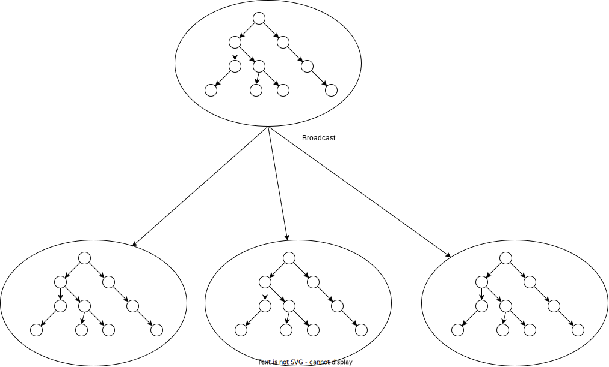
Ao final do cálculo, um processo pode coletar os resultados de cada processo e escolher a melhor entre as rotas encontradas usando a função reduction.
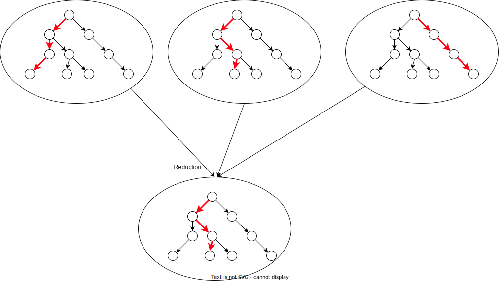
Se preferir que cada busca se restrinja a um subgrafo, onde os vários subgrafos são complementares, então a função scatter seria usada.13

Finalmente, a função gather poderia ser usada para coletar subgrafos com rotas encontradas e montar um grafo com todas as alternativas.
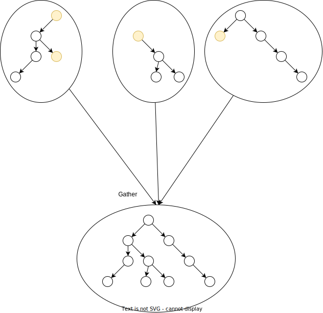
Filas de mensagem
TODO
- Conteúdo.
- Gancho para pub/sub.
Publish/Subscribe
Em capítulos anteriores, estudamos a arquitetura cliente/servidor, em que o cliente envia mensagens diretamente ao um servidor para que este, em reação à mensagem, realize alguma operação. Na arquitetura publish/subscribe (ou pub/sub), há também a figura de um processo envia mensagens, o publisher, e a figura do que recebe mensagens, o subscriber, mas com pelo menos duas diferenças fundamentais que fazem com pub/sub se apresente como uma alternativa à cliente/servidor. Em primeiro lugar, os dois processos nunca comunicam diretamente e não precisam nem saber da existência do outro ou sequer executarem ao mesmo tempo, estando desacoplados. Em segundo lugar, mensagens são associadas a tópicos, aos quais os subscribers se subscrevem; somente tópicos de interesse são entregues aos subscribers, em um tipo de filtragem.

Desacoplamento
Um dos aspectos mais importantes proporcionados pelo padrão pub/sub é o desacoplamento entre as partes envolvidas, o qual ocorre em várias dimensões:
- Espaço: publishers e subscribers não precisam se conhecer (por exemplo, não há necessidade de informar endereço IP e porta de cada um).
- Tempo: publishers e subscribers não precisam nem estar em execução ao mesmo tempo.
- Sincronização: operações em cada componente não precisa ser interrompida durante a publicação ou recebimento.
Este desacoplamento é implementado por meio de brokers, processos especiais que servem de ponto de conexão entre publishers e subscribers, que dão persistência às mensagens (caso necessário), e distribuem as mensagens a quem devido.
Filtragem
O broker tem um papel fundamental pois permite a especificação de diversos níveis de filtragem:
- Baseada em assunto: subscribers se registram para receber mensagens de um ou mais tópicos de interesse. Em geral esses tópicos são strings com um formato hierárquico, por exemplo
/devices/sensor/+/temperature. - Baseada em conteúdo: baseada em linguagem de filtragem de conteúdo específica. Downside: mensagem não pode ser criptografada.
- Baseada em tipo: leva em consideração o tipo ou classe de uma mensagem ou evento, como o tipo Exception e subtipos, por exemplo.
Observe que uma mesma mensagem pode ser entregue a múltiplos subscribers se pertencer a um tópico de interesse em comum e que um mesmo subscriber pode se interessar por diversos tópicos.

Arquiteturas baseadas em Pub/Sub
Embora simples, frameworks pub/sub permitem a implementação de arquiteturas complexas, como o exemplo da figura a seguir.

Protocolos Epidêmicos
Comunicação Orientada a Fluxos
TODO
Material
Invocação Remota de Procedimentos - RPC
Em 1984, Birrel e Nelson14 introduziram o mecanismo de Invocação Remota de Procedimentos (Remote Procedure Calls), que permite que processos façam, pasmem, invocações de procedimentos remotos!
Óbvio, a inovação não está na capacidade de uma máquina conversar com outra, mas em como esta conversa acontece, do ponto de vista do programador.
Por exemplo, RPC permite que se procure a substring apontada por c dentro da string apontada por a, a partir da posição 3, usando x = substring(a,3,c); mas com o invocador da função em um processo e a implementação da função propriamente dita, em outro, possivelmente em outra máquina.
Stubs
Se o que queremos é colocar o código da função substring em um outro processo e executá-lo como se estivéssemos no mesmo processo que faz a invocação, precisamos pensar em várias questões, sendo a principal o fato de que, embora seja simulada a invocação local, "por debaixo do capô" há o uso sockets para a comunicação com o processo remoto.
Esta simulação usará código extra, que finge implementar substring para o invocador mas delega ao código remoto o trabalho real da busca.
Este código extra é conhecido como stub, ou para ser mais preciso, stub cliente, que faz parte do processo invocando a operação, e stub servidor, que faz parte do processo executando a operação invocada15.
Assim, o cliente invoca a função no stub cliente, achando que é a função que quer executar. O stub cliente faz o marshaling 16 dos parâmetros e usa o SO para transferir os dados via rede para o stub servidor. Quando recebe a resposta do servidor, o stub cliente retorna a mesma resposta, como se tivesse sido calculada localmente. Já o stub servidor fica esperando o contato do cliente. Quando acontece, faz o unmarshalling dos dados, invoca a função localmente na aplicação servidor e pega o resultado, que retorna ao cliente.
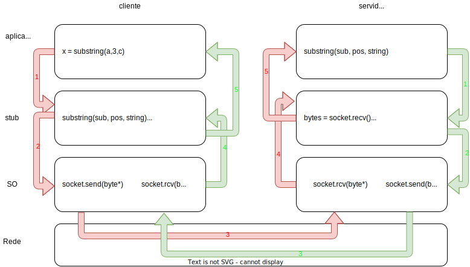
| Stub cliente | Stub servidor |
|---|---|
1. invoca substring no stub |
1. retorna o resultado para o stub |
| 2. conecta-se ao servidor, envia parâmetros e especifica a função | 2. envia resulta serializado para cliente |
| 3. transmite os dados serializados | transmite resposta serializada |
| 4. desserializa parâmetros | 4. desserializa os parâmetro |
5. invoca a função substring localmente |
5. retorna o resultado para o invocador |
Transparência
É para o programador a grande vantagem do uso de RPC, pois se pode escrever código distribuído "igual" ao não-distribuído, certo?
Isto é, interface baseada em procedimentos e sem a necessidade de detalhar portas, sockets, e representação de dados. Ou seja, tudo é transparente!
Como já discutimos, vários fatores trabalham contra a transparência em sistemas distribuídos.
Em específico quanto à transparência dada pelo RPC, também temos limitações.
Antes de nos aprofundarmos, lembremos como uma invocação de funções acontece normalmente dentro de um único processo.17
O código x = substring(a,3,c);, que procura *c em *a, é traduzido nos seguintes passos em linguagem de máquina:
- coloque o valor de
cna pilha - coloque
3na pilha - coloque o valor de
ana pilha - coloque o endereço de retorno na pilha (junto com outros dados de controle)
- salte para
substringajustando o instruction pointer - ... procure substring ...
- coloque o resultado no acumulador
- limpe a pilha
- salte de volta recuperando o endereço de retorno da pilha e ajustando o IP
- coloque resultado em
x

O problema é que há uma distinção clara em pelo menos dois processos e se pensarmos no código descrito acima, temos que entender que
- processos independentes não compartilham um espaço de endereçamento, e
- processos independentes não compartilham uma pilha.

Assim, como fica a passagem de parâmetro por referência, uma vez que o stub servidor não pode usar endereços do espaço de endereçamento do cliente? Algumas abordagens para simular a passagem por referência são possíveis. Por exemplo, o valor apontado pelo ponteiro é passado para o servidor, que armazena o valor e alguma posição de memória e passa o endereço de tal posição para a função invocada.
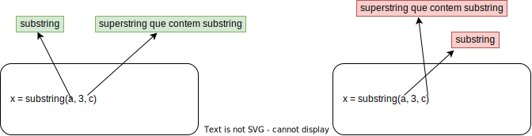
Contudo, a modificação do valor pela função não reflete imediatamente no invocador; tais valores tem que ser copiados novamente e usados para sobrescrever o valor original no cliente. Além disso, esta abordagem só é possível se o valor apontado for delimitado, o que nem sempre é fácil de determinar. Por exemplo, se o ponteiro for para o primeiro elemento de uma lista, o que deve ser copiado para o servidor? Só o primeiro elemento? Toda a lista? Como ensinar para o framework RPC o que é "toda" a lista?
Java "resolve" o problema da passagem de parâmetro por referência passando todo o grafo do objeto passado como parâmetro para o servidor. Isto é, além de serializar o objeto apontado no parâmetro, se o mesmo aponta para outros objetos, estes também serão serializados e transferidos; o servidor irá então reconstruir todo o grafo e passar para o método sendo invocado. É muito fácil ver que esta abordagem pode se tornar inviável rapidamente. Quando for o caso, Java permite marcar objetos como remotos e, em vez de serializar este objeto e enviar para o servidor, envia informação suficiente para que o servidor possa invocar métodos em tal objeto no cliente, tornando nebulosa a definição de quem é quem.
Outros fatores também trabalham contra a transparência para o desenvolvedor.
Descoberta de Serviços
Por exemplo, mesmo que o socket seja ocultado, ele ainda existe e precisa de informações sobre onde se conectar (endereço e porta), que de alguma forma deve ser passada para o framework de RPC. Esta informação pode ser configurada a priori por um administrador de sistemas, mas requer atualizações sempre que a localização do serviço for alterada ou novos servidores adicionados. Mais interessante seria um mecanismo que permitisse uma indireção para o serviço; o próprio DNS pode ser uma opção inicial, mas um serviço dedicado pode ser mais apropriado, pois permite descobrir serviços e não apenas servidores.
Birrel e Nelson propuseram um serviço de Páginas Amarelas, no qual clientes podem questionar quem oferece um certo serviço e serem redirecionados automaticamente. Esta abordagem tem seus próprios problemas, como por exemplo determinar quem administra o serviço para incluir novos servidores. E como determinar qual serviço acessar, caso hajam múltiplas opções de servidores.
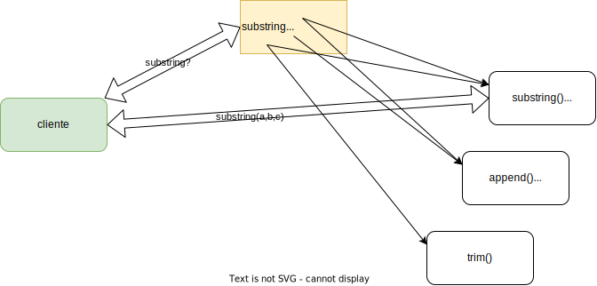
Apesar dos problemas, páginas amarelas foram usadas em abordagens muito mais recentes para descobertas de serviços, por exemplo Web Services Discovery, que permite a descoberta de Web Services em escala global, e Java Remote Object Registry que permite a descoberta de objetos remotos Java.
Tratamento de Exceções
Uma vez que a invocação é remota, há sempre o risco de problemas de comunicação entre cliente e servidor.
Logo, é necessária a introdução de código para tratamento de erros deste tipo, o que absolutamente não era necessário no caso do código centralizado.
Assim, o que era um simples x = substring(a,3,c); passa para algo assim (em uma linguagem fictícia):
1 2 3 4 5 6 7 8 9 10 11 12 13 | |
O que nos leva novamente ao ponto sobre não haver transparência total em sistemas distribuídos... e esta falta de transparência pode ser muito mais complicada do que simplesmente adicionar try e catch ao seu código.
Mais que isso, imagine que a operação sendo executada altere algum estado no servidor. Se esta fosse uma operacão local, cada invocação da operação corresponderia a exatamente uma execução da operação, na ausência de falhas. No caso de falhas, se o processo quebra como um todo, no seu reinício, pode-se identificar se a operação foi ou não executada e aplicar ações corretivas. Mas e no caso remoto?
Reexecuções
No caso da operação distribuída, se o servidor quebra, isso levará a um erro ser percebido do lado do cliente como uma falha na conexão. Se o cliente havia invocado uma operação mas percebeu o erro antes de receber uma confirmação de sua execução, isto pode indicar que:
- (i) ou a requisição nunca foi recebida pelo servidor e, portanto, não foi executada,
- (ii) ou a execução foi recebida e executada, mas a resposta não foi enviada.
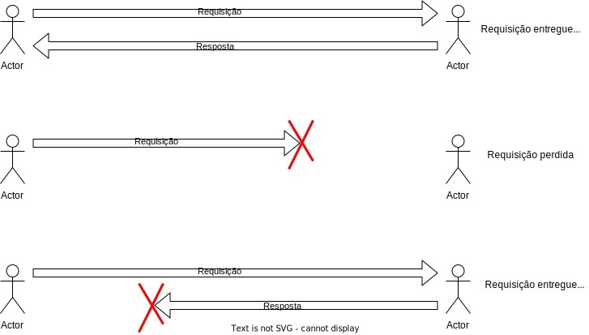
O cliente tem que tratar o erro, mas como? Se a operação precisa ser executada a qualquer custo, o cliente pode retentá-la quando conseguir novo contato com o servidor (ou mesmo com outro). Neste caso, se o que de fato aconteceu foi a situação (i), então retentar garantirá que a operação seja executada pelo servidor, mesmo que várias tentativas sejam necessárias. Contudo, se o que o ocorreu foi a situação (ii), então reenviar a operação levará a mesma a ser executada múltiplas vezes, o que pode ou não ser ok. Esta abordagem é o que garantirá que a execução acontece pelo menos 1 vez.
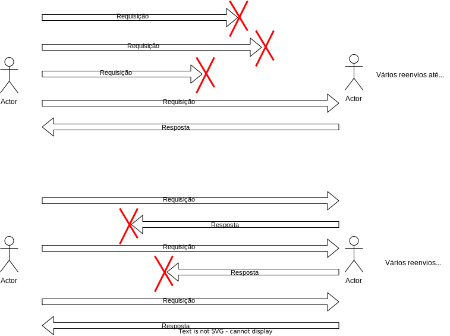
Imagine que a operação se tratasse de uma transferência de saldo, ou a encomenda de de um caminhão carregado de algum produto caro. Neste caso, reexecutar não parece ser uma opção. Neste caso, talvez a melhor opção seja não retentar a operação, o que levará a zero execuções na situação (ii) e uma execução na situação, ou seja, a no máximo uma execução. Uma situação em que esta abordagem é claramente preferível é a entrega de quadros em um stream de vídeo ou áudio, devido à importância da operação ser atrelada ao momento de sua execução.
Quantidade de execuções
- No máximo uma - não retentar
- Exatamente uma - impedir que falhas aconteçam

- Pelo menos uma - retentar até ter confirmação
Nenhuma destas abordagens é igual ao que é garantido na versão centralizada e que é provavelmente o que todo desenvolvedor desejaria para suas invocações de métodos, que fossem executados exatamente uma vez. Garantir esta semântica na comunicação é muito difícil, pois é impossível ter certeza de que uma mensagem não foi processada pelo servidor ainda. De fato, é impossível ter certeza se o servidor falhou; pode ter sido apenas uma falha na comunicação.
Como é impossível evitar falhas, se uma operação deve executada, ela deve ser retentada. Mas ela não pode ser repetida, então a alternativa é tornar as operações idempotentes, o que quer dizer que o efeito desejado é alcançado pela primeira execução e que execuções seguintes não alteram o estado.
Operações idempotentes
Múltiplas execuções tem o mesmo efeito uma execução.
- Exemplo:
x = 10 - Anti-exemplo:
x = x+1.
Infelizmente não é trivial programar para idempotência, principalmente se o servidor for acessado concorrentemente por múltiplos clientes, tornando seu estado uam região crítica.
Concorrência no servidor
É importante notar que um servidor não está obrigado a atender requisições de somente um cliente. Logo, se múltiplos clientes acessam o mesmo servidor, o estado do servidor será "compartilhado" pelos vários clientes e passos são necessários para que o comportamento no acesso deste estado seja coerente com a especificação.
Pense por exemplo em um servidor que conta o número de acessos feitos por clientes. O incremento do contador deve ser considerado uma região crítica, caso múltiplos threads tratem as requisições dos clientes, o que já vimos ser uma boa idia. Claro que dificilmente seu servidor seria algo tão simples assim. Em vez disso, ele provavelmente executará lógicas complicadas, como por exemplo, armazenar o estado de contas bancárias e, neste caso, as funções expostas por RPC incluiríam a operação transferir saldo de A para B, o que nos leva a mais um problema interessante, o do risco de reexecuções.
Além disso, o servidor provavelmente suportará diversas operações e por isso deverá identificar qual a operação sendo requisitada. Isto é feito por um dispatcher, que demultiplexa as operações requisitadas; o dispatcher pode, em algumas arquiteturas, ser independente do skeleton em si.
Interface Definition Language
Há diversas opções de frameworks para RPC, com diferentes características, focos, e garantias. Alguns são parte da linguagem e outros são implementados como bibliotecas. Alguns suportam múltiplas linguagens e alguns apenas uma.
Suporte a RPC na linguagem
- Sem RPC: C, C++, Java < 5.0 (1.5), Python
- Com RPC: Java, Go, Erlang, Scala, Haskell
- Ambientes heterogêneos: Thrift, gRPC, Akka, SOAP
Frameworks mais modernos permitem escolher a forma de serialização dos dados, se legível para humanos ou binário, se o transporte é via HTTP ou protocolo mais baixo nível, se os dados trafegam abertamente ou se faz uso de comunicação criptografada (SSL). Outros permitem escolher semântica de execução entre no máximo uma e pelo menos uma, e há até quem prometa exatamente uma. Mas todos os frameworks tem algumas características em comum e uma delas é o uso de uma Linguagem de Definição de Interface (IDL).
Uma IDL é a linguagem pela qual desenvolvedor define quais as operações (funções, procedimentos, métodos) serão acessíveis via RPC e quais os seus operandos. Há várias IDL definidas, para os diversos frameworks disponíveis.
A imagem a seguir mostra um exemplo genérico da criação cliente e servidor usando um framework RPC genérico, inclusive o processamento da definição feita em IDL do serviço e a junção deste código gerado ao código escrito pelo desenvolvedor.

O fluxo de processamento é o seguinte:
- Arquivo em IDL é compilado por um compilador IDL e gera diversos arquivos:
- stub cliente - código que implementa a interface, com código para repassar invocações para o servidor.
- stub servidor (skeleton) - código que atende a conexões do stub cliente e repassa para a implementação própria da função.
- conversão de dados - código que serializa e deserializa dados para serem trafegados de e para o servidor
- cabeçalhos - definições da interface na linguagem de desenvolvimento da aplicação; se linguagem C, por exemplo, estes serão arquivos
.h, se em Java, então estes serão arquivos.java, com definição deinterface.
- O código cliente é compilado e gera o cliente, que deve
- inicializar a infraestrutura RPC
- Tipo de transporte
- SSL?
- Localizar servidor
- Lidar com falhas
- inicializar a infraestrutura RPC
- O código servidor é compilado e gera o servidor, que deve
- exportar e localizar serviços (serviço de nomeação)
- Gerenciamento de portas
- Conexões
Referências
- The call Stack
- Message Oriented Middleware
- Enterprise Message Bus
- To Message Bus or Not: distributed system design
-
By User:Ludovic.ferre - Internet Connectivity Distribution&Core.svg, CC BY-SA 3.0, (https://commons.wikimedia.org/w/index.php?curid=10030716) ↩
-
Endereços IP não públicos não servem como identificadores únicos na Internet. ↩
-
Você pode usar outro nome, desde que não seja
socket.py, e que adapte o comando para sua execução. ↩ -
O programa
telneté normalmente instalado por padrão tanto no Windows, OSX quanto no Linux. Já onetcatnormalmente precisa ser instalado por você. Em alguns sistemas, em vez denetcato comando é onc. ↩ -
O Facebook, insatisfeito com os progressos da versão Apache, acabou fazendo um novo fork do projeto, fbthrift, também de código livre, mas que tem evoluído de forma desconexa do projeto Apache. Contudo, no escopo do nosso estudo, as duas versões são essencialmente iguais. ↩
-
Distributed Systems: Principles and Paradigms. Capítulo 1, Figura 1. ↩
-
Simplificações são possíveis, mas introduzem outras complexidades. ↩
-
O Google stadia é uma plataforma de jogos que vai na contramão desta ideia, levando todo o processamento pesado para a nuvem. ↩
-
O particionamento básico provido pela MPI é simplesmente uma divisão do buffer com os dados entre os vários processos, então para fragmentar um grafo, você teria um pouco de trabalho. ↩
-
O stub do servidor também é conhecido como skeleton. ↩
-
Marshalling: representar parâmetros de forma própria para transmissão "no fio". ↩
-
Omitirei alguns detalhes aqui, em nome da generalidade, mas vocês podem recuperá-los em seus livros de Arquitetura de Computadores. ↩